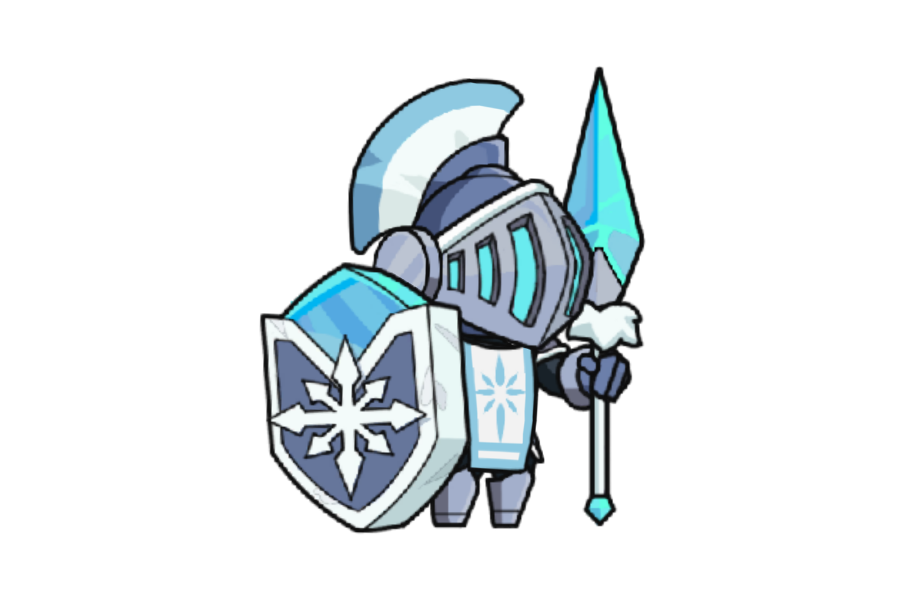
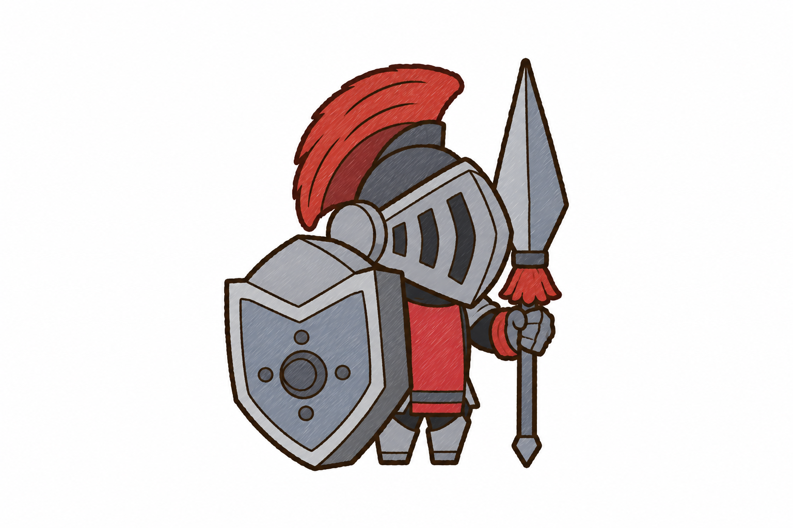
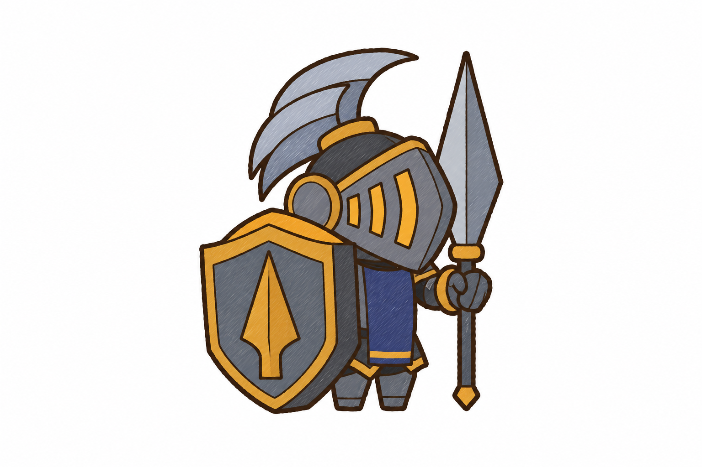
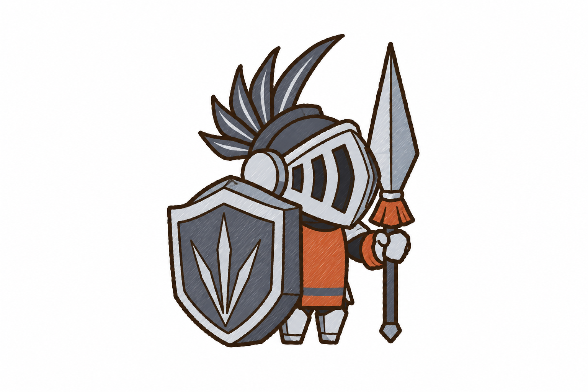

Chiến binh sắt (tướng 2 đảo Kim, con gốc monster_3348): 3 hướng trên đúng bố cục rig
Đã bỏ bông tuyết ở khiên và vạt áo, mũi giáo tinh thể băng thành mũi giáo sắt, khe mặt nạ hết phát sáng. Mọi mảnh giữ chỗ và cỡ như con gốc
(để lắp lên đúng xương, dùng lại chuyển động); B và C đổi dáng cái mào để khỏi giống con gốc.

Con gốc (khung 0 idle), chỉ để so

A · thép xám + đỏ thẫm: giữ hình bóng mọi mảnh; mào thành chùm lông ngựa đỏ cùng dáng quạt; khiên thép, núm sắt 4 đinh; vạt áo đỏ; tua giáo đỏ; khe mặt nạ tối

B · gang sẫm + đồng thau: mào đổi dáng thành ba bản thép cong xếp lớp; khiên viền đồng, mũi giáo đồng nổi giữa; vạt áo xanh than; khe mặt nạ hổ phách

C · bạc sáng + đồng đỏ: mào đổi dáng thành chùm kim sắt xoè (gợi chiêu cuối triệu hồi kim sắt); khiên sắt sẫm, ba kim bạc xoè; vạt áo đồng đỏ; tua giáo đồng đỏ